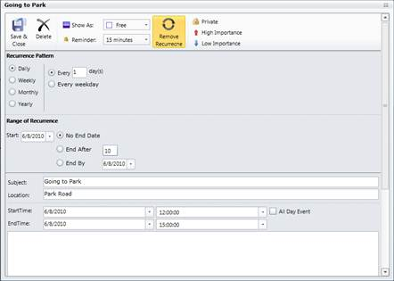

1. You can add the recurrence appointment dynamically using the appointment window.
2. On that window, click Enable Recurrence. You can view the details for the recurrence appointment.
3. Here, choose the type of recurrence appointment you require.

Figure 7: Adding Recurrence Appointment using Appointment Window